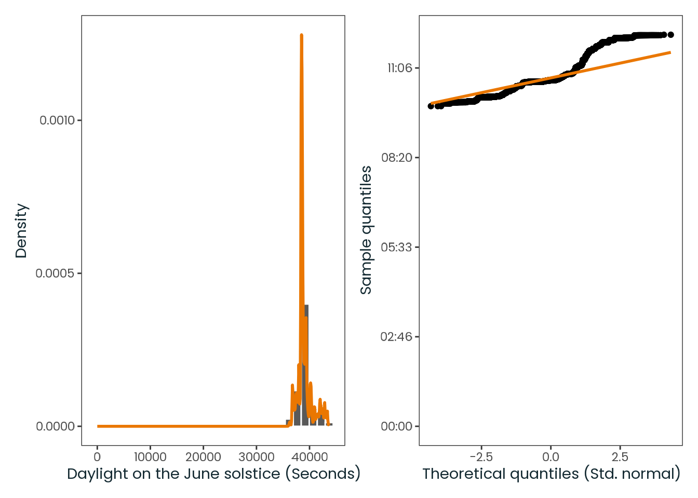
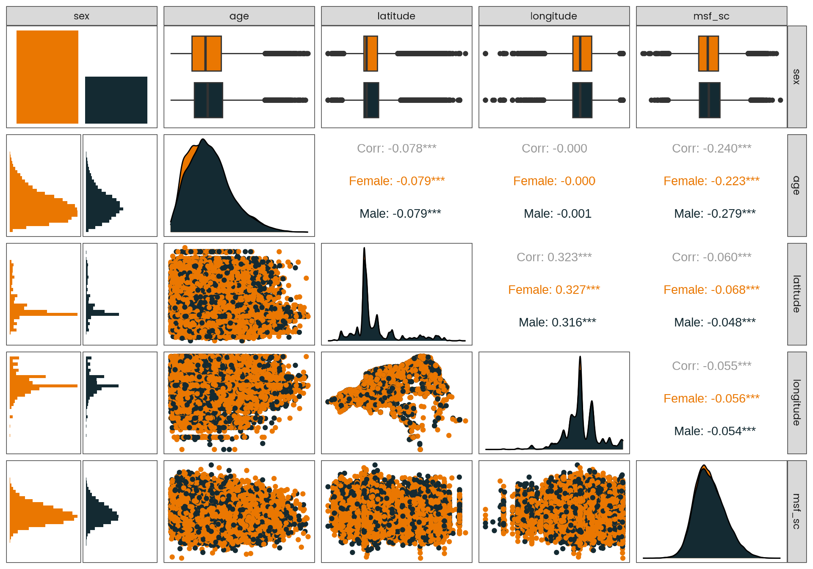
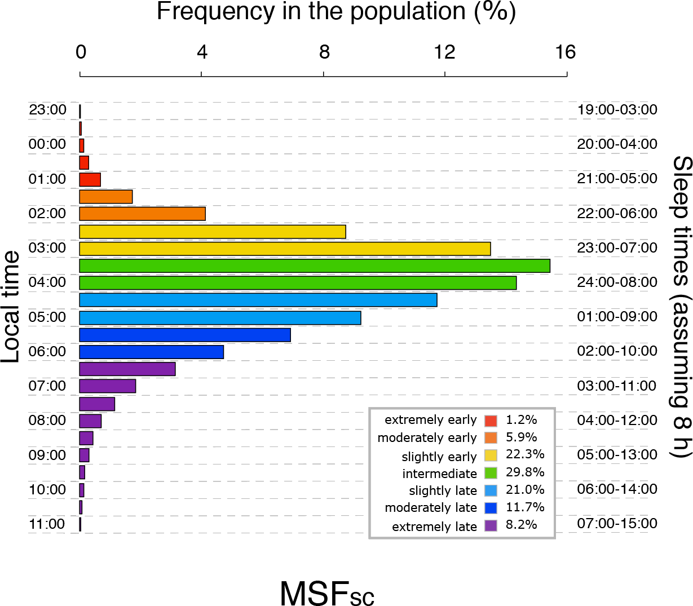

This document focus in providing a comprehensive overview of the data collected in the survey.
It focuses on the sample used on the analysis, with explicit indications provided whenever the full sample is used. The analysis sample is a subset of the full sample, and includes only Brazilian individuals aged 18 or older, residing in the UTC-3 timezone, who completed the survey between October 15 and 21, 2017.
weighted_data|>stats_summary( col ='msf_sc', name ='MSF~sc~ (Chronotype proxy) (local time)', as_list =FALSE)
Table C.1: Statistics for the msf_sc variable.
Code
weighted_data|>test_normality( col ='msf_sc', name ='MSF~sc~ (Chronotype proxy) (local time)')#> Registered S3 method overwritten by 'quantmod':#> method from#> as.zoo.data.frame zoo
Figure C.1: Histogram of the msf_sc variable with a kernel density estimate, along with a quantile-quantile (Q-Q) plot between the variable and the theoretical quantiles of the normal distribution.
Code
weighted_data|>plot_box_plot( col ='msf_sc')
Figure C.2: Boxplot of the msf_sc variable.
Code
weighted_data|>stats_summary( col ='age', name ='Age (years)', as_list =FALSE)
Table C.2: Statistics for the age variable.
Code
weighted_data|>test_normality( col ='age', name ='Age (years)')
Figure C.3: Histogram of the age variable with a kernel density estimate, along with a quantile-quantile (Q-Q) plot between the variable and the theoretical quantiles of the normal distribution.
Code
weighted_data|>plot_box_plot( col ='age')
Figure C.4: Boxplot of the age variable.
Code
weighted_data|>stats_summary( col ='latitude', name ='Latitude (decimal degrees)', as_list =FALSE)
Table C.3: Statistics for the latitude variable.
Code
weighted_data|>test_normality( col ='latitude', name ='Latitude (decimal degrees)')
Figure C.5: Histogram of the latitude variable with a kernel density estimate, along with a quantile-quantile (Q-Q) plot between the variable and the theoretical quantiles of the normal distribution.
Code
weighted_data|>plot_box_plot( col ='latitude')
Figure C.6: Boxplot of the latitude variable.
Code
weighted_data|>stats_summary( col ='longitude', name ='Longitude (decimal degrees)', as_list =FALSE)
Table C.4: Statistics for the longitude variable.
Code
weighted_data|>test_normality( col ='longitude', name ='Longitude (decimal degrees)')
Figure C.7: Histogram of the longitude variable with a kernel density estimate, along with a quantile-quantile (Q-Q) plot between the variable and the theoretical quantiles of the normal distribution.
Code
weighted_data|>plot_box_plot( col ='longitude')
Figure C.8: Boxplot of the longitude variable.
Code
weighted_data|>stats_summary( col ='ghi_month', name ='Monthly average global horizontal irradiance (Wh/m²)', as_list =FALSE)
Table C.5: Statistics for the ghi_month variable.
Code
weighted_data|>test_normality( col ='ghi_month', name ='Monthly average global horizontal irradiance (Wh/m²)')
Figure C.9: Histogram of the ghi_month variable with a kernel density estimate, along with a quantile-quantile (Q-Q) plot between the variable and the theoretical quantiles of the normal distribution.
Code
weighted_data|>plot_box_plot( col ='ghi_month')
Figure C.10: Boxplot of the ghi_month variable.
Code
weighted_data|>stats_summary( col ='ghi_annual', name ='Annual average global horizontal irradiance (Wh/m²)', as_list =FALSE)
Table C.6: Statistics for the ghi_annual variable.
Code
weighted_data|>test_normality( col ='ghi_annual', name ='Annual average global horizontal irradiance (Wh/m²)')
Figure C.11: Histogram of the ghi_annual variable with a kernel density estimate, along with a quantile-quantile (Q-Q) plot between the variable and the theoretical quantiles of the normal distribution.
Code
weighted_data|>plot_box_plot( col ='ghi_annual')
Figure C.12: Boxplot of the ghi_annual variable.
Code
weighted_data|>stats_summary( col ='march_equinox_sunrise', name ='Sunrise on the March equinox (date-time seconds)', as_list =FALSE)
Table C.7: Statistics for the march_equinox_sunrise variable.
Code
weighted_data|>test_normality( col ='march_equinox_sunrise', name ='Sunrise on the March equinox (date-time seconds)')
Figure C.13: Histogram of the march_equinox_sunrise variable with a kernel density estimate, along with a quantile-quantile (Q-Q) plot between the variable and the theoretical quantiles of the normal distribution.
Code
weighted_data|>plot_box_plot( col ='march_equinox_sunrise')
Figure C.14: Boxplot of the march_equinox_sunrise variable.
Code
weighted_data|>stats_summary( col ='march_equinox_sunset', name ='Sunset on the March equinox (seconds)', as_list =FALSE)
Table C.8: Statistics for the march_equinox_sunset variable.
Code
weighted_data|>test_normality( col ='march_equinox_sunset', name ='Sunset on the March equinox (seconds)')
Figure C.15: Histogram of the march_equinox_sunset variable with a kernel density estimate, along with a quantile-quantile (Q-Q) plot between the variable and the theoretical quantiles of the normal distribution.
Code
weighted_data|>plot_box_plot( col ='march_equinox_sunset')
Figure C.16: Boxplot of the march_equinox_sunset variable.
Code
weighted_data|>stats_summary( col ='march_equinox_daylight', name ='Daylight on the March equinox (seconds)', as_list =FALSE)
Table C.9: Statistics for the march_equinox_daylight variable.
Code
weighted_data|>test_normality( col ='march_equinox_daylight', name ='Daylight on the March equinox (seconds)')
Figure C.17: Histogram of the march_equinox_daylight variable with a kernel density estimate, along with a quantile-quantile (Q-Q) plot between the variable and the theoretical quantiles of the normal distribution.
Code
weighted_data|>plot_box_plot( col ='march_equinox_daylight')
Figure C.18: Boxplot of the march_equinox_daylight variable.
Code
weighted_data|>stats_summary( col ='june_solstice_sunrise', name ='Sunrise on the June solstice (seconds)', as_list =FALSE)
Table C.10: Statistics for the june_solstice_sunrise variable.
Code
weighted_data|>test_normality( col ='june_solstice_sunrise', name ='Sunrise on the June solstice (seconds)')
Figure C.19: Histogram of the june_solstice_sunrise variable with a kernel density estimate, along with a quantile-quantile (Q-Q) plot between the variable and the theoretical quantiles of the normal distribution.
Code
weighted_data|>plot_box_plot( col ='june_solstice_sunrise')
Figure C.20: Boxplot of the june_solstice_sunrise variable.
Code
weighted_data|>stats_summary( col ='june_solstice_sunset', name ='Sunset on the June solstice (seconds)', as_list =FALSE)
Table C.11: Statistics for the june_solstice_sunset variable.
Code
weighted_data|>test_normality( col ='june_solstice_sunset', name ='Sunset on the June solstice (seconds)')
Figure C.21: Histogram of the june_solstice_sunset variable with a kernel density estimate, along with a quantile-quantile (Q-Q) plot between the variable and the theoretical quantiles of the normal distribution.
Code
weighted_data|>plot_box_plot( col ='june_solstice_sunset')
Figure C.22: Boxplot of the june_solstice_sunset variable.

Code
weighted_data|>stats_summary( col ='june_solstice_daylight', name ='Daylight on the June solstice (seconds)', as_list =FALSE)
Table C.12: Statistics for the june_solstice_daylight variable.
Code
weighted_data|>test_normality( col ='june_solstice_daylight', name ='Daylight on the June solstice (seconds)')
Figure C.23: Histogram of the june_solstice_daylight variable with a kernel density estimate, along with a quantile-quantile (Q-Q) plot between the variable and the theoretical quantiles of the normal distribution.
Code
weighted_data|>plot_box_plot( col ='june_solstice_daylight')
Figure C.24: Boxplot of the june_solstice_daylight variable.
Code
weighted_data|>stats_summary( col ='september_equinox_sunrise', name ='Sunrise on the September solstice (seconds)', as_list =FALSE)
Table C.13: Statistics for the september_equinox_sunrise variable.
Code
weighted_data|>test_normality( col ='september_equinox_sunrise', name ='Sunrise on the September solstice (seconds)')
Figure C.25: Histogram of the september_equinox_sunrise variable with a kernel density estimate, along with a quantile-quantile (Q-Q) plot between the variable and the theoretical quantiles of the normal distribution.
Code
weighted_data|>plot_box_plot( col ='september_equinox_sunrise')
Figure C.26: Boxplot of the september_equinox_sunrise variable.
Code
weighted_data|>stats_summary( col ='september_equinox_sunset', name ='Sunset on the September solstice (seconds)', as_list =FALSE)
Table C.14: Statistics for the september_equinox_sunset variable.
Code
weighted_data|>test_normality( col ='september_equinox_sunset', name ='Sunset on the September solstice (seconds)')
Figure C.27: Histogram of the september_equinox_sunset variable with a kernel density estimate, along with a quantile-quantile (Q-Q) plot between the variable and the theoretical quantiles of the normal distribution.
Code
weighted_data|>plot_box_plot( col ='september_equinox_sunset')
Figure C.28: Boxplot of the september_equinox_sunset variable.
Code
weighted_data|>stats_summary( col ='september_equinox_daylight', name ='Daylight on the September solstice (seconds)', as_list =FALSE)
Table C.15: Statistics for the september_equinox_daylight variable.
Code
weighted_data|>test_normality( col ='september_equinox_daylight', name ='Daylight on the September solstice (seconds)')
Figure C.29: Histogram of the september_equinox_daylight variable with a kernel density estimate, along with a quantile-quantile (Q-Q) plot between the variable and the theoretical quantiles of the normal distribution.
Code
weighted_data|>plot_box_plot( col ='september_equinox_daylight')
Figure C.30: Boxplot of the september_equinox_daylight variable.
Code
weighted_data|>stats_summary( col ='december_solstice_sunrise', name ='Sunrise on the December solstice (seconds)', as_list =FALSE)
Table C.16: Statistics for the december_solstice_sunrise variable.
Code
weighted_data|>test_normality( col ='december_solstice_sunrise', name ='Sunrise on the December solstice (seconds)')
Figure C.31: Histogram of the december_solstice_sunrise variable with a kernel density estimate, along with a quantile-quantile (Q-Q) plot between the variable and the theoretical quantiles of the normal distribution.
Code
weighted_data|>plot_box_plot( col ='december_solstice_sunrise')
Figure C.32: Boxplot of the december_solstice_sunrise variable.
Code
weighted_data|>stats_summary( col ='december_solstice_sunset', name ='Sunset on the December solstice (seconds)', as_list =FALSE)
Table C.17: Statistics for the december_solstice_sunset variable.
Code
weighted_data|>test_normality( col ='december_solstice_sunset', name ='Sunset on the December solstice (seconds)')
Figure C.33: Histogram of the december_solstice_sunset variable with a kernel density estimate, along with a quantile-quantile (Q-Q) plot between the variable and the theoretical quantiles of the normal distribution.
Code
weighted_data|>plot_box_plot( col ='december_solstice_sunset')
Figure C.34: Boxplot of the december_solstice_sunset variable.
Code
weighted_data|>stats_summary( col ='december_solstice_daylight', name ='Daylight on the December solstice (seconds)', as_list =FALSE)
Table C.18: Statistics for the december_solstice_daylight variable.
Code
weighted_data|>test_normality( col ='december_solstice_daylight', name ='Daylight on the December solstice (seconds)')
Figure C.35: Histogram of the december_solstice_daylight variable with a kernel density estimate, along with a quantile-quantile (Q-Q) plot between the variable and the theoretical quantiles of the normal distribution.

Code
weighted_data|>plot_box_plot( col ='december_solstice_daylight')
Figure C.36: Boxplot of the december_solstice_daylight variable.
Table C.21: Latitude and longitude statistics of respondents (Analysis sample).
Source: Created by the author.
C.7.2 Brazil
Brazilian Institute of Geography and Statistics’s (IBGE) population estimates of the population distribution is used in the same timeframe of the sample (2017) (Instituto Brasileiro de Geografia e Estatística, n.d.). The data can be accessed at the IBGE’s SIDRA platform (IBGE’s Table 6579).
IBGE’s Table 6579 was used instead of Table 6407 because the later does not have the same level of detail for the municipalities.
Code
ibge_6579_data_state<-sidrar::get_sidra(api ="/t/6579/n3/all/v/all/p/2017")|>rutils::shush()|>dplyr::as_tibble()|>janitor::clean_names()|>dplyr::select(unidade_da_federacao_codigo, valor)|>dplyr::rename( state_code =unidade_da_federacao_codigo, n =valor)|>dplyr::mutate(state_code =as.integer(state_code))|>dplyr::relocate(state_code, n)
prettycheck:::assert_internet()ibge_6407_data<-sidrar::get_sidra( api =paste0("/t/6407/n3/all/v/606/p/2017/c2/allxt/c58/1140,1141,1144,1145,1152,", "2793,3299,3300,3301,3350,6798,40291,118282"))|>dplyr::as_tibble()|>janitor::clean_names()|>dplyr::select(valor, unidade_da_federacao_codigo, unidade_da_federacao, ano, sexo,grupo_de_idade)|>dplyr::rename( n =valor, state_code =unidade_da_federacao_codigo, state =unidade_da_federacao, year =ano, sex =sexo, age_group =grupo_de_idade)|>dplyr::arrange(state, sex, age_group)|>dplyr::mutate( year =as.integer(year), country ="Brazil", region =get_brazil_region(state, "state"), state_code =as.integer(state_code), sex =dplyr::case_match(sex,"Homens"~"Male","Mulheres"~"Female"), sex =factor(sex, ordered =FALSE), age_group =dplyr::case_match(age_group,"0 a 4 anos"~"0-4","5 a 9 anos"~"5-9","10 a 13 anos"~"10-13","14 a 15 anos"~"14-15","16 a 17 anos"~"16-17","18 a 19 anos"~"18-19","20 a 24 anos"~"20-24","25 a 29 anos"~"25-29","30 a 39 anos"~"30-39","40 a 49 anos"~"40-49","50 a 59 anos"~"50-59","60 a 64 anos"~"60-64","65 anos ou mais"~"65+"), age_group =factor(age_group, ordered =TRUE), age_group_midpoint =dplyr::case_when(age_group=="0-4"~2,age_group=="5-9"~7,age_group=="10-13"~11.5,age_group=="14-15"~14.5,age_group=="16-17"~16.5,age_group=="18-19"~18.5,age_group=="20-24"~22,age_group=="25-29"~27,age_group=="30-39"~34.5,age_group=="40-49"~44.5,age_group=="50-59"~54.5,age_group=="60-64"~62,age_group=="65+"~65+62-54.5# 65 + 62 - 54.5), n =as.integer(n*1000))|>dplyr::relocate(year, country, region, state_code, state, sex, age_group, age_group_midpoint, n)ibge_6407_data
plot_ibge_6407_age_2<-ibge_6407_data|>dplyr::rename(age =age_group_midpoint)|>dplyr::mutate(n =n/1000)|>dplyr::select(state_code, age, n)|>tidyr::uncount(n)|>plot_brazil_state("age", transform ="identity", text_size =env_vars$base_size, print =TRUE)#> ! There are duplicated values in state_code. age will be aggregated using the mean.
plot_full_age_2<-anonymized_data|>plot_brazil_state( col_fill ="age", transform ="identity", text_size =env_vars$base_size, print =TRUE)#> ! There are duplicated values in state_code. age will be aggregated using the mean.
Code
plot_full_age_3<-anonymized_data|>plot_brazil_municipality( col_fill ="age", # Means viridis ="plasma", direction =-1, transform ="identity", text_size =env_vars$base_size, print =TRUE)#> ! There are duplicated values in municipality_code. age will be aggregated using the mean.
plot_analysis_age_2<-anonymized_data|>plot_brazil_state( col_fill ="age", # Means text_size =env_vars$base_size, transform ="identity", print =TRUE)#> ! There are duplicated values in state_code. age will be aggregated using the mean.
Code
plot_analysis_age_3<-weighted_data|>plot_brazil_municipality( col_fill ="age", # Means viridis ="plasma", direction =-1, transform ="identity", print =TRUE)#> ! There are duplicated values in municipality_code. age will be aggregated using the mean.
Figure C.39: Relation between age and chronotype, divided by sex and aggregated by the mean. Chronotype is represented by the local time of the sleep corrected midpoint between sleep onset and sleep end on work-free days (MSFsc), MCTQ proxy for measuring the chronotype. The gray line represents both sex. Vertical lines represent the standard error of the mean (SEM).
Source: Created by the author. Based on data visualization found in Roenneberg et al. (2007).
Figure C.40: Distribution of European chronotypes by age, as shown in Roenneberg et al. (2007) (for comparison).
Source: Reproduction from Roenneberg et al. (2019).
Figure C.41: Relation between age and weight (kg), divided by sex and aggregated by the mean. The gray line represents both sex. Vertical lines represent the standard error of the mean (SEM).
Source: Created by the author. Based on data visualization found in Roenneberg et al. (2007).
Figure C.42: Distribution of the local time for the sleep-corrected midpoint between sleep onset and sleep end on work-free days (MSFsc), a proxy for chronotype. Chronotypes are categorized into quantiles, ranging from extremely early (\(0 |- 0.11\)) to extremely late (\(0.88 - 1\)).
Source: Created by the author. Based on data visualization found in Roenneberg et al. (2019).
Figure C.43: Distribution of European chronotypes, as shown in Roenneberg et al. (2019) (for comparison).

Source: Reproduction from Roenneberg et al. (2019).
Figure C.44: Boxplots of mean MSFsc values aggregated by 1° latitude intervals, illustrating the relationship between latitude and chronotype. MSFsc represents the local time of the sleep-corrected midpoint between sleep onset and sleep end on work-free days, a proxy for chronotype. Higher MSFsc values indicate later chronotypes. The × symbol points to the mean. The red line represents a linear regression. The differences in mean/median values across latitudes are minimal relative to the Munich ChronoType Questionnaire (MCTQ) scale.
Source: Created by the author. Based on data visualization found in Leocadio-Miguel et al. (2017).
C.12 Chronotype Geographical Distribution
Code
limits<-# Interquartile range (IQR): Q3 - Q1c(weighted_data|>dplyr::pull(msf_sc)|>transform_time()|>quantile(0.25, na.rm =TRUE),weighted_data|>dplyr::pull(msf_sc)|>transform_time()|>quantile(0.75, na.rm =TRUE))weighted_data|>dplyr::mutate(msf_sc =transform_time(msf_sc))|>plot_brazil_state( col_fill ="msf_sc", transform ="identity", viridis ="cividis", direction =-1, binned =FALSE, labels =labels_hms, limits =limits, # !!! text_size =env_vars$base_size, print =TRUE)#> ! There are duplicated values in state_code. msf_sc will be aggregated using the mean.
Code
limits<-# Interquartile range (IQR): Q3 - Q1c(weighted_data|>dplyr::pull(msf_sc)|>transform_time()|>quantile(0.25, na.rm =TRUE),weighted_data|>dplyr::pull(msf_sc)|>transform_time()|>quantile(0.75, na.rm =TRUE))weighted_data|>dplyr::mutate(msf_sc =transform_time(msf_sc))|>plot_brazil_municipality( col_fill ="msf_sc", transform ="identity", viridis ="cividis", direction =-1, binned =FALSE, breaks =seq(90000, 115000, 5000), labels =labels_hms, limits =limits, point =FALSE, legend =TRUE, text_size =env_vars$base_size, print =TRUE)#> ! There are duplicated values in municipality_code. msf_sc will be aggregated using the mean.
Instituto Brasileiro de Geografia e Estatística. (n.d.). Tabela 6579: População residente estimada [Table]. SIDRA. Retrieved November 16, 2023, from https://sidra.ibge.gov.br/Tabela/3939
Leocadio-Miguel, M. A., Louzada, F. M., Duarte, L. L., Areas, R. P., Alam, M., Freire, M. V., Fontenele-Araujo, J., Menna-Barreto, L., & Pedrazzoli, M. (2017). Latitudinal cline of chronotype. Scientific Reports, 7(1), 5437. https://doi.org/10.1038/s41598-017-05797-w
Roenneberg, T., Kumar, C. J., & Merrow, M. (2007). The human circadian clock entrains to sun time. Current Biology, 17(2), R44–R45. https://doi.org/10.1016/j.cub.2006.12.011
Roenneberg, T., Wirz-Justice, A., Skene, D. J., Ancoli-Israel, S., Wright, K. P., Dijk, D.-J., Zee, P., Gorman, M. R., Winnebeck, E. C., & Klerman, E. B. (2019). Why should we abolish daylight saving time? Journal of Biological Rhythms, 34(3), 227–230. https://doi.org/10.1177/0748730419854197
Source Code
<!-- %:::% .common h1 begin %:::% --># Exploratory Data Analysis<!-- %:::% .common h1 end %:::% -->```{r}#| label: setup#| include: falsesource(here::here("R", "_setup.R"))```## OverviewThis document focus in providing a comprehensive overview of the data collected in the survey.It focuses on the sample used on the analysis, with explicit indications provided whenever the full sample is used. The analysis sample is a subset of the full sample, and includes only Brazilian individuals aged 18 or older, residing in the UTC-3 timezone, who completed the survey between October 15 and 21, 2017.## Setting the Enviroment```{r}#| eval: falselibrary(cli)library(dplyr)library(fBasics)library(geobr)library(ggplot2)library(here)library(hms)library(janitor)library(lubridate)library(lubritime) # github.com/danielvartan/lubritimelibrary(magrittr)library(moments)library(nortest)library(patchwork)library(prettycheck) # github.com/danielvartan/prettychecklibrary(purrr)library(rlang)library(rutils) # github.com/danielvartan/rutilslibrary(sidrar)library(stats)library(stringr)library(targets)library(tidyr)library(tseries)library(viridis)``````{r}#| include: falselibrary(ggplot2)library(lubridate)library(magrittr)library(rlang)``````{r}#| output: falsesource(here::here("R", "categorize_msf_sc.R"))source(here::here("R", "get_brazil_region.R"))source(here::here("R", "panel_tabset_var_distribution.R"))source(here::here("R", "plot_age.R"))source(here::here('R', 'plot_box_plot.R'))source(here::here("R", "plot_brazil.R"))source(here::here("R", "plot_chronotype.R"))source(here::here("R", "plot_ggally.R"))source(here::here("R", "plot_ggcorrplot.R"))source(here::here('R', 'plot_hist.R'))source(here::here("R", "plot_latitude_series.R"))source(here::here('R', 'plot_qq.R'))source(here::here("R", "plot_world.R"))source(here::here("R", "stats_summary.R"))source(here::here('R', 'test_normality.R'))source(here::here("R", "utils.R"))source(here::here('R', 'utils-checks.R'))source(here::here('R', 'utils-plots.R'))source(here::here('R', 'utils-stats.R'))```## Loading data```{r}#| eval: false#| output: false#| code-fold: falsetargets::tar_make(script = here::here("_targets.R"))```### Full Sample```{r}#| code-fold: falseanonymized_data <- targets::tar_read("anonymized_data", store = here::here("_targets"))```### Analysis Sample```{r}#| code-fold: falseweighted_data <- targets::tar_read("weighted_data", store = here::here("_targets"))```## Distribution of Main Variables```{r}#| eval: false#| include: falseweighted_data |>panel_tabset_var_distribution(data_name ="weighted_data",cols =c("msf_sc", "age", "latitude","longitude", "ghi_month", "ghi_annual", "march_equinox_sunrise", "march_equinox_sunset", "march_equinox_daylight", "june_solstice_sunrise", "june_solstice_sunset", "june_solstice_daylight", "september_equinox_sunrise", "september_equinox_sunset", "september_equinox_daylight", "december_solstice_sunrise", "december_solstice_sunset", "december_solstice_daylight" ),col_labels =c("MSF~sc~ (Chronotype proxy) (local time)","Age (years)","Latitude (decimal degrees)","Longitude (decimal degrees)","Monthly average global horizontal irradiance (Wh/m²)","Annual average global horizontal irradiance (Wh/m²)","Sunrise on the March equinox (date-time seconds)","Sunset on the March equinox (seconds)","Daylight on the March equinox (seconds)","Sunrise on the June solstice (seconds)","Sunset on the June solstice (seconds)","Daylight on the June solstice (seconds)","Sunrise on the September solstice (seconds)","Sunset on the September solstice (seconds)","Daylight on the September solstice (seconds)","Sunrise on the December solstice (seconds)","Sunset on the December solstice (seconds)","Daylight on the December solstice (seconds)" ),heading ="###",suffix ="sm-3" )```{{< include ../qmd/_panel-tabset-var-distribution-sm-3.qmd >}}## Correlation Matrix of the Main Variables### Full Sample::: {#fig-appendice-correlation-matrix-full-sample}```{r}#| message: false#| warning: falseanonymized_data |>plot_ggally(cols =c("sex", "age", "latitude", "longitude", "msf_sc" ),mapping = ggplot2::aes(colour = sex) ) |> rutils::shush()```Source: Created by the author.Correlation matrix of main variables (**Full sample**).:::### Analysis Sample::: {#fig-appendice-correlation-matrix-analysis-sample}```{r}#| message: false#| warning: falseweighted_data |>plot_ggally(cols =c("sex", "age", "latitude", "longitude", "msf_sc" ),mapping = ggplot2::aes(colour = sex) ) |> rutils::shush()```Source: Created by the author.Correlation matrix of main variables (**Analysis sample**).:::## ComparisonS Between Sample and PopulationSee Supplementary Material 4.## Geographic distribution### Latitudinal and Longitudinal Range#### BrazilClick [here](https://anuario.ibge.gov.br/2023/territorio/posicao-e-extensao.html) to learn more about Brazil's extreme points.::: {#tbl-appendice-1-logitudinal-range-brazil}```{r}#| message: false#| warning: falsebox <- geobr::read_country(2017) |> rutils::shush() |> dplyr::pull(geom) |> sf::st_bbox() |>as.list()dplyr::tibble(name =c("min", "max", "range"),latitude =c( box$ymin, box$ymax, box$ymax - box$ymin ),longitude =c( box$xmin, box$xmax, box$xmax - box$xmin ))```[Source: Brazilian Institute of Geography and Statistics ([IBGE](https://www.ibge.gov.br/)), via the shapefiles provided by the [`geobr`](https://ipeagit.github.io/geobr/) R package]{.legend}Brazil's extreme points (**full sample**).:::#### Full Sample::: {#tbl-appendice-1-logitudinal-range-full-sample}```{r}#| message: false#| warning: falsebox <- anonymized_data |> dplyr::filter(country =="Brazil") |> dplyr::summarise(xmin =min(longitude, na.rm =TRUE),xmax =max(longitude, na.rm =TRUE),xrange = xmax - xmin,ymin =min(latitude, na.rm =TRUE),ymax =max(latitude, na.rm =TRUE),yrange = ymax - ymin ) |>as.list()dplyr::tibble(name =c("min", "max", "range"),latitude =c( box$ymin, box$ymax, box$ymax - box$ymin ),longitude =c( box$xmin, box$xmax, box$xmax - box$xmin ))```[Source: Created by the author.]{.legend}Latitude and longitude statistics of respondents (**Full sample**).:::#### Analysis Sample::: {#tbl-appendice-1-logitudinal-range-analysis-sample}```{r}#| message: false#| warning: falsebox <- weighted_data |> dplyr::filter(country =="Brazil") |> dplyr::summarise(xmin =min(longitude, na.rm =TRUE),xmax =max(longitude, na.rm =TRUE),xrange = xmax - xmin,ymin =min(latitude, na.rm =TRUE),ymax =max(latitude, na.rm =TRUE),yrange = ymax - ymin ) |>as.list()dplyr::tibble(name =c("min", "max", "range"),latitude =c( box$ymin, box$ymax, box$ymax - box$ymin ),longitude =c( box$xmin, box$xmax, box$xmax - box$xmin ))```[Source: Created by the author.]{.legend}Latitude and longitude statistics of respondents (**Analysis sample**).:::### BrazilBrazilian Institute of Geography and Statistics's ([IBGE](https://www.ibge.gov.br/)) population estimates of the population distribution is used in the same timeframe of the sample (2017) [@ibgel]. The data can be accessed at the [IBGE's SIDRA](https://sidra.ibge.gov.br/tabela/6579) platform (IBGE's Table 6579).IBGE's [Table 6579](https://sidra.ibge.gov.br/tabela/6579) was used instead of [Table 6407](https://sidra.ibge.gov.br/tabela/6407) because the later does not have the same level of detail for the municipalities.```{r}ibge_6579_data_state <- sidrar::get_sidra(api ="/t/6579/n3/all/v/all/p/2017") |> rutils::shush() |> dplyr::as_tibble() |> janitor::clean_names() |> dplyr::select(unidade_da_federacao_codigo, valor) |> dplyr::rename(state_code = unidade_da_federacao_codigo,n = valor ) |> dplyr::mutate(state_code =as.integer(state_code)) |> dplyr::relocate(state_code, n)``````{r}plot_6579_ibge_1 <- ibge_6579_data_state |>plot_brazil_state("n", transform ="log10",text_size = env_vars$base_size,print =TRUE )``````{r}ibge_6579_data_municipality <- sidrar::get_sidra(api ="/t/6579/n6/all/v/all/p/2017") |> rutils::shush() |> dplyr::as_tibble() |> janitor::clean_names() |> dplyr::select(municipio_codigo, valor) |> dplyr::rename(municipality_code = municipio_codigo,n = valor ) |> dplyr::mutate(municipality_code =as.integer(municipality_code)) |> dplyr::relocate(municipality_code, n)``````{r}max_limit <- ibge_6579_data_municipality |> dplyr::pull(n) |>inverse_log_max(10)plot_6579_ibge_2 <- ibge_6579_data_municipality |>plot_brazil_municipality("n",transform ="log10",viridis ="plasma",direction =-1,breaks =10^(seq(1, log10(max_limit) -1)),text_size = env_vars$base_size,print =TRUE )``````{r}plot_6579_ibge_3 <- ibge_6579_data_municipality |>plot_brazil_municipality(col_fill ="n",transform ="log10",viridis ="plasma",alpha =0.75,direction =-1,breaks =c(100000, 500000, 1000000, 5000000, 10000000, 12000000),point =TRUE,text_size = env_vars$base_size,print =TRUE )``````{r}plot_ibge_panel <- patchwork::wrap_plots( plot_6579_ibge_1 |>rm_scale(), plot_6579_ibge_2 |>rm_scale(), plot_6579_ibge_3 |>rm_scale(),ncol =2, nrow =2,widths =c(1, 1), heights =c(1, 1) ) + patchwork::plot_annotation(tag_levels ="A") & ggplot2::theme_void() & ggplot2::theme(axis.title = ggplot2::element_blank(),axis.text= ggplot2::element_blank(),axis.ticks = ggplot2::element_blank(),legend.key.size = ggplot2::unit(0.5, "cm"),text = ggplot2::element_text(size =9) )plot_ibge_panel```### Full Sample```{r}#| include: falseanonymized_data |> dplyr::pull(country) |> rutils:::drop_na() |>unique() |>length()``````{r}plot_full_1 <- anonymized_data |>plot_world_countries(transform ="log10",text_size = env_vars$base_size,print =TRUE )``````{r}plot_full_2 <- anonymized_data |>plot_brazil_state(text_size = env_vars$base_size,print =TRUE )``````{r}max_limit <- anonymized_data |> dplyr::filter(country =="Brazil") |> dplyr::count(municipality_code) |> dplyr::pull(n) |>inverse_log_max(10)plot_full_3 <- anonymized_data |>plot_brazil_municipality(transform ="log10",viridis ="plasma",direction =-1,breaks =10^(seq(1, log10(max_limit) -1)),text_size = env_vars$base_size,print =TRUE )``````{r}max_limit <- anonymized_data |> dplyr::filter(country =="Brazil") |> dplyr::count(municipality_code) |> dplyr::pull(n) |>max()plot_full_4 <- anonymized_data |>plot_brazil_municipality(transform ="log10",viridis ="plasma",alpha =0.75,direction =-1,color_border ="gray75",breaks =c(10, 500, 1000, 5000, 10000, 12000),point =TRUE,text_size = env_vars$base_size,print =TRUE )``````{r}plot_full_5 <- anonymized_data |>plot_brazil_point(color_point = viridis::plasma(1, begin =0.65, direction =1) |> stringr::str_trunc(7, ellipsis =""),text_size = env_vars$base_size,print =TRUE )```<!-- See <https://r-charts.com/ggplot2/combining-plots/>. -->```{r}patchwork::wrap_plots( plot_full_2 |>rm_scale(), plot_full_3 |>rm_scale(), plot_full_4 |>rm_scale(), plot_full_5 |>rm_scale(),ncol =2, nrow =2,widths =c(1, 1), heights =c(1, 1)) + patchwork::plot_annotation(tag_levels ="A") & ggplot2::theme_void() & ggplot2::theme(axis.title = ggplot2::element_blank(),axis.text= ggplot2::element_blank(),axis.ticks = ggplot2::element_blank(),legend.key.size = ggplot2::unit(0.5, "cm"),text = ggplot2::element_text(size =9) )```### Analysis Sample```{r}plot_analysis_1 <- weighted_data |>plot_brazil_state(transform ="log10",text_size = env_vars$base_size,print =TRUE )``````{r}max_limit <- weighted_data |> dplyr::filter(country =="Brazil") |> dplyr::count(municipality_code) |> dplyr::pull(n) |>inverse_log_max(10)plot_analysis_2 <- weighted_data |>plot_brazil_municipality(transform ="log10",viridis ="cividis",direction =-1,breaks =10^(seq(1, log10(max_limit))),text_size = env_vars$base_size,print =TRUE )``````{r}plot_analysis_3 <- weighted_data |>plot_brazil_municipality(transform ="log10",viridis ="plasma",alpha =0.75,direction =-1,breaks =c(10, 500, 1000, 5000, 7500),point =TRUE,text_size = env_vars$base_size,print =TRUE )``````{r}plot_analysis_4 <- weighted_data |>plot_brazil_point(color_point = viridis::plasma(1, begin =0.65, direction =1) |> stringr::str_trunc(7, ellipsis =""),text_size = env_vars$base_size,print =TRUE )```<!-- See. <https://patchwork.data-imaginist.com/articles/patchwork.html> -->```{r}patchwork::wrap_plots( plot_analysis_1 |>rm_scale(), plot_analysis_2 |>rm_scale(), plot_analysis_3 |>rm_scale(), plot_analysis_4 |>rm_scale(),ncol =2, nrow =2) + patchwork::plot_annotation(tag_levels ="A") & ggplot2::theme_void() & ggplot2::theme(axis.title = ggplot2::element_blank(),axis.text= ggplot2::element_blank(),axis.ticks = ggplot2::element_blank(),legend.key.size = ggplot2::unit(0.5, "cm"),text = ggplot2::element_text(size =9) )```### Population *versus* Sample```{r}patchwork::wrap_plots( plot_6579_ibge_1 |>rm_scale(), plot_full_2 |>rm_scale(),ncol =2, nrow =1) + patchwork::plot_annotation(tag_levels ="A") & ggplot2::theme_void() & ggplot2::theme(axis.title = ggplot2::element_blank(),axis.text= ggplot2::element_blank(),axis.ticks = ggplot2::element_blank(),legend.key.size = ggplot2::unit(0.5, "cm"),text = ggplot2::element_text(size =9) )``````{r}patchwork::wrap_plots( plot_6579_ibge_2 |>rm_scale(), plot_full_3 |>rm_scale(),ncol =2, nrow =1) + patchwork::plot_annotation(tag_levels ="A") & ggplot2::theme_void() & ggplot2::theme(axis.title = ggplot2::element_blank(),axis.text= ggplot2::element_blank(),axis.ticks = ggplot2::element_blank(),legend.key.size = ggplot2::unit(0.5, "cm"),text = ggplot2::element_text(size =9) )``````{r}patchwork::wrap_plots( plot_6579_ibge_3 |>rm_scale(), plot_full_4 |>rm_scale(),ncol =2, nrow =1) + patchwork::plot_annotation(tag_levels ="A") & ggplot2::theme_void() & ggplot2::theme(axis.title = ggplot2::element_blank(),axis.text= ggplot2::element_blank(),axis.ticks = ggplot2::element_blank(),legend.key.size = ggplot2::unit(0.5, "cm"),text = ggplot2::element_text(size =9) )```## Age Distributions::: {.callout-note}The models were created using cell weights to account for unbalances.:::### BrazilSee <https://sidra.ibge.gov.br/tabela/6407> to learn more about the data.```{r}#| message: false#| warning: falseprettycheck:::assert_internet()ibge_6407_data <- sidrar::get_sidra(api =paste0("/t/6407/n3/all/v/606/p/2017/c2/allxt/c58/1140,1141,1144,1145,1152,", "2793,3299,3300,3301,3350,6798,40291,118282" ) ) |> dplyr::as_tibble() |> janitor::clean_names() |> dplyr::select( valor, unidade_da_federacao_codigo, unidade_da_federacao, ano, sexo, grupo_de_idade ) |> dplyr::rename(n = valor,state_code = unidade_da_federacao_codigo,state = unidade_da_federacao,year = ano,sex = sexo,age_group = grupo_de_idade ) |> dplyr::arrange(state, sex, age_group) |> dplyr::mutate(year =as.integer(year),country ="Brazil",region =get_brazil_region(state, "state"),state_code =as.integer(state_code),sex = dplyr::case_match( sex,"Homens"~"Male","Mulheres"~"Female" ),sex =factor(sex, ordered =FALSE),age_group = dplyr::case_match( age_group,"0 a 4 anos"~"0-4","5 a 9 anos"~"5-9","10 a 13 anos"~"10-13","14 a 15 anos"~"14-15","16 a 17 anos"~"16-17","18 a 19 anos"~"18-19","20 a 24 anos"~"20-24","25 a 29 anos"~"25-29","30 a 39 anos"~"30-39","40 a 49 anos"~"40-49","50 a 59 anos"~"50-59","60 a 64 anos"~"60-64","65 anos ou mais"~"65+" ),age_group =factor(age_group, ordered =TRUE),age_group_midpoint = dplyr::case_when( age_group =="0-4"~2, age_group =="5-9"~7, age_group =="10-13"~11.5, age_group =="14-15"~14.5, age_group =="16-17"~16.5, age_group =="18-19"~18.5, age_group =="20-24"~22, age_group =="25-29"~27, age_group =="30-39"~34.5, age_group =="40-49"~44.5, age_group =="50-59"~54.5, age_group =="60-64"~62, age_group =="65+"~65+62-54.5# 65 + 62 - 54.5 ),n =as.integer(n *1000) ) |> dplyr::relocate( year, country, region, state_code, state, sex, age_group, age_group_midpoint, n )ibge_6407_data```**Unit**: Thousands of people.```{r}#| message: false#| warning: falsesource(here::here("R", "plot_age.R"))plot_ibge_6407_age_1 <- ibge_6407_data |> dplyr::rename(age = age_group_midpoint) |> dplyr::mutate(n = n /1000) |> dplyr::select(sex, age, n) |> tidyr::uncount(n) |>plot_age_pyramid(breaks =c(0, 10, 20, 30, 40, 50, 60, 65, 90), na_rm =TRUE, text_size = env_vars$base_size )```**Unit**: Thousands of people.```{r}plot_ibge_6407_age_2 <- ibge_6407_data |> dplyr::rename(age = age_group_midpoint) |> dplyr::mutate(n = n /1000) |> dplyr::select(state_code, age, n) |> tidyr::uncount(n) |>plot_brazil_state("age",transform ="identity",text_size = env_vars$base_size,print =TRUE )```### Full Sample```{r}#| message: false#| warning: falsesource(here::here("R", "plot_age.R"))plot_full_age_1<- anonymized_data |>plot_age_pyramid(interval =10, na_rm =TRUE, text_size = env_vars$base_size )``````{r}plot_full_age_2 <- anonymized_data |>plot_brazil_state(col_fill ="age",transform ="identity",text_size = env_vars$base_size,print =TRUE )``````{r}plot_full_age_3 <- anonymized_data |>plot_brazil_municipality(col_fill ="age", # Meansviridis ="plasma",direction =-1,transform ="identity",text_size = env_vars$base_size,print =TRUE )```### Analysis Sample```{r}#| message: false#| warning: falseplot_analysis_age_1 <- weighted_data |>plot_age_pyramid(interval =10,na_rm =TRUE, text_size = env_vars$base_size )``````{r}plot_analysis_age_2 <- anonymized_data |>plot_brazil_state(col_fill ="age", # Meanstext_size = env_vars$base_size,transform ="identity",print =TRUE )``````{r}plot_analysis_age_3 <- weighted_data |>plot_brazil_municipality(col_fill ="age", # Meansviridis ="plasma",direction =-1,transform ="identity",print =TRUE )```## Age and Sex Series### Age/sex _versus_ Chronotype (**Full Sample**)::: {#fig-appendice-1-age-sex-chronotype-series}```{r}#| message: false#| warning: falseplot_age_sex_series <- anonymized_data |> dplyr::filter(age <=50) |>plot_age_series(col ="msf_sc", line_width =2, boundary =0.5, point_size =1,error_bar_width =0.5, error_bar_linewidth =0.5,error_bar =TRUE,date_breaks ="15 mins",text_size = env_vars$base_size )```[Source: Created by the author. Based on data visualization found in @roenneberg2007a.]{.legend}Relation between age and chronotype, divided by sex and aggregated by the mean. Chronotype is represented by the local time of the sleep corrected midpoint between sleep onset and sleep end on work-free days (MSF~sc~), MCTQ proxy for measuring the chronotype. The gray line represents both sex. Vertical lines represent the standard error of the mean (SEM).:::::: {#fig-appendice-2-roenneberg-2007-figure-4}Source: Reproduction from @roenneberg2019b.Distribution of European chronotypes by age, as shown in @roenneberg2007a (for comparison).:::### Age/sex _versus_ Weight (**Full Sample**)::: {#fig-appendice-1-age-sex-weigth-series}```{r}#| message: false#| warning: falseplot_age_sex_weigth_series <- anonymized_data |> dplyr::filter(age <=50) |>plot_age_series(col ="weight", line_width =2, boundary =0.5, point_size =1,error_bar_width =0.5, error_bar_linewidth =0.5,error_bar =TRUE,y_label ="Weight (kg)", text_size = env_vars$base_size )```[Source: Created by the author. Based on data visualization found in @roenneberg2007a.]{.legend}Relation between age and weight (kg), divided by sex and aggregated by the mean. The gray line represents both sex. Vertical lines represent the standard error of the mean (SEM).:::## Chronotype distribution (**Analysis sample**)::: {#fig-appendice-1-chronotype-distribution-analysis-sample}```{r}#| message: false#| warning: falseweighted_data |>plot_chronotype(text_size = env_vars$base_size)```[Source: Created by the author. Based on data visualization found in @roenneberg2019b.]{.legend}Distribution of the local time for the sleep-corrected midpoint between sleep onset and sleep end on work-free days (MSF~sc~), a proxy for chronotype. Chronotypes are categorized into quantiles, ranging from extremely early ($0 |- 0.11$) to extremely late ($0.88 - 1$).:::::: {#fig-appendice-2-roenneberg-2019-figure-1}Source: Reproduction from @roenneberg2019b.Distribution of European chronotypes, as shown in @roenneberg2019b (for comparison).:::## Latitude Series::: {#fig-appendice-1-chronotype-latitude-series}```{r}#| message: false#| warning: falsesource(here::here("R", "plot_latitude_series.R"))weighted_data |>plot_latitude_series(text_size = env_vars$base_size)```[Source: Created by the author. Based on data visualization found in @leocadio-miguel2017.]{.legend}Boxplots of mean MSF~sc~ values aggregated by 1° latitude intervals, illustrating the relationship between latitude and chronotype. MSF~sc~ represents the local time of the sleep-corrected midpoint between sleep onset and sleep end on work-free days, a proxy for chronotype. Higher MSF~sc~ values indicate later chronotypes. The × symbol points to the mean. The red line represents a linear regression. The differences in mean/median values across latitudes are minimal relative to the Munich ChronoType Questionnaire (MCTQ) scale.:::## Chronotype Geographical Distribution```{r}#| eval: false#| include: falsemsf_sc_cutoffs <- weighted_data |>get_chronotype_cutoffs("msf_sc")limits <-c( msf_sc_cutoffs$interval |> dplyr::first() |> lubridate::int_start(), msf_sc_cutoffs$interval |> dplyr::last() |> lubridate::int_end() ) |>as.numeric()``````{r}limits <-# Interquartile range (IQR): Q3 - Q1c( weighted_data |> dplyr::pull(msf_sc) |>transform_time() |>quantile(0.25, na.rm =TRUE), weighted_data |> dplyr::pull(msf_sc) |>transform_time() |>quantile(0.75, na.rm =TRUE) )weighted_data |> dplyr::mutate(msf_sc =transform_time(msf_sc)) |>plot_brazil_state(col_fill ="msf_sc",transform ="identity",viridis ="cividis",direction =-1,binned =FALSE,labels = labels_hms,limits = limits, # !!!text_size = env_vars$base_size,print =TRUE )``````{r}limits <-# Interquartile range (IQR): Q3 - Q1c( weighted_data |> dplyr::pull(msf_sc) |>transform_time() |>quantile(0.25, na.rm =TRUE), weighted_data |> dplyr::pull(msf_sc) |>transform_time() |>quantile(0.75, na.rm =TRUE) )weighted_data |> dplyr::mutate(msf_sc =transform_time(msf_sc)) |>plot_brazil_municipality(col_fill ="msf_sc",transform ="identity",viridis ="cividis",direction =-1,binned =FALSE,breaks =seq(90000, 115000, 5000),labels = labels_hms,limits = limits,point =FALSE,legend =TRUE,text_size = env_vars$base_size,print =TRUE )``````{r}weighted_data |> dplyr::mutate(msf_sc_category =categorize_msf_sc(msf_sc),msf_sc_category =factor( msf_sc_category, levels =c("Extremely early", "Moderately early", "Slightly early","Intermediate", "Slightly late", "Moderately late", "Extremely late" ),ordered =TRUE ) ) |>plot_brazil_point(col_group ="msf_sc_category",transform ="identity",viridis ="cividis",direction =-1,size =0.5,alpha =0.75,legend =TRUE,text_size = env_vars$base_size,print =TRUE )``````{r}plot <- weighted_data |> dplyr::mutate(msf_sc_category =categorize_msf_sc(msf_sc),msf_sc_category =factor( msf_sc_category, levels =c("Extremely early", "Moderately early", "Slightly early","Intermediate", "Slightly late", "Moderately late", "Extremely late" ),ordered =TRUE ) ) |>plot_brazil_point(col_group ="msf_sc_category",viridis ="cividis",direction =-1,size =0.1,alpha =1,legend =FALSE,text_size = env_vars$base_size,print =FALSE,axis.title = ggplot2::element_blank(),axis.text= ggplot2::element_blank(),axis.ticks = ggplot2::element_blank(),panel.grid.major =element_blank(),panel.grid.minor =element_blank() )plot |>rm_scale() + ggplot2::facet_wrap(~msf_sc_category, ncol =4, nrow =2)```